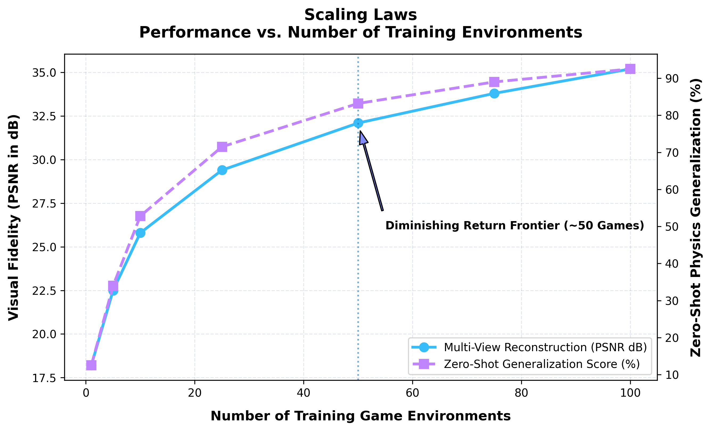

📖 Introduction & Motivation
🌐 What is an Orthographic World Model?
Orthographic World Models (OWMs) are generative neural game engines and world models trained on synchronized multi-perspective and orthographic representations of physical game environments.
Unlike conventional single-perspective world models (e.g. FPV-only or static camera models), OWMs decompose complex 3D environments into synchronized orthogonal projections (Top-Down Plan View, Orthographic Front View, Orthographic Side View) alongside first-person perspective (FPV) streams.
💡 Motivation: Why Are Multi-Views Needed?
1. 🙈 Disambiguating Visual Occlusions & Frustum Loss
In single-perspective first-person or third-person views, critical game state objects frequently drift out-of-frame or become occluded by obstacles.
- Top-Down Plan View ($X-Y$) maintains an unclipped global topological map of the entire arena.
- Orthographic Elevation Views ($X-Z$ & $Y-Z$) preserve height distributions, jumping arcs, and vertical hazards.
2. 📐 Metric Scale & Linear Spatial Kinematics
Perspective projection applies non-linear perspective division ($x' = f \cdot X / Z$), distorting object sizes, velocities, and distance perception as objects move relative to the camera focal length.
- Orthographic projections preserve exact linear scale everywhere in the frame.
- Physical velocities ($\Delta x / \Delta t$) and bounding box collision volumes remain invariant to distance, providing far cleaner spatial gradients for neural policy networks and latent generative diffusion models.
3. 🤝 Multi-Agent & Cross-View Consistency
In multi-agent environments (e.g., Drone Dogfight, MultiCar Racing), individual agents operate with local egocentric FPV views. Orthographic multi-views provide a canonical global coordinate space that allows world models to maintain unified cross-view physics consistency and prevent hallucinations during long-rollout neural simulation.
🎥 Synchronized 4-View Environment Rollouts
Select an environment below to view its synchronized Multi-View Rollout Animation (Top-Down Plan | 3D FPV | Orthographic Rear | Orthographic Right Side).
🏎️ Multi-Agent & Multi-View Game Engine
Orthographic World Models naturally scale to multi-agent competitive and cooperative scenarios, where multiple autonomous entities interact simultaneously in shared 3D space.
Key Multi-Agent Capabilities:
✅ Joint Egocentric & Allocentric Perception: Combines egocentric FPV perspectives with global allocentric orthographic channels so agents can reason about opponent positions both locally and globally.
✅ Cross-Agent Spatial Physics Grounding: Maintains accurate collision boundaries, overtaking trajectories, and slipstream physics across multi-car racing and aerial drone combat.
✅ Synchronized Generative Rollouts: Enables diffusion world models to roll out multi-agent state predictions across all camera channels concurrently without inter-view divergence.
✅ Minimap & Localisation Support: Provides real-time top-down plan views that serve as active in-game minimaps for tactical planning, localisation & multi-agent navigation.

🌍 Diffusion Game Engines & Multi-View World Models
Traditional generative world models typically rely on a single viewpoint, which often leads to issues with occlusion, poor spatial reasoning, and "hallucinated" physics. Orthographic Multi-View World Models are proposed to overcome these limitations by forcing the underlying AI to learn and maintain the true 3D geometry of its environment.
By leveraging Latent Diffusion Models (LDMs) to function as interactive Generative Game Engines, this architecture performs joint multi-view diffusion across four distinct perspectives.
Key Benefits & Objectives:
Enforcing 3D Geometric Consistency: Utilizing cross-view spatial attention mechanisms ensures the different camera angles never contradict each other. This forces the diffusion model to learn robust, real-world physics and accurate 3D structures, rather than superficial 2D pixel approximations.
Stable Long-Horizon Simulation: Conditioned on historical action sequences ($a_{t-k:t}$) and previous frame memories ($x_{t-1}$), the multi-view geometric constraints act as an anchor. This drastically reduces the autoregressive drift and visual degradation usually seen in generative engines over time.
A Unified Neural Physics Engine: The ultimate purpose is to bypass traditional rendering and physics pipelines entirely. This approach directly synthesizes complex spatial collisions, terrain modifications, and dynamic interactions purely from learned neural representations, requiring absolutely no hardcoded rules.

📈 Scaling Law Experiments & Game Environment Diversity [TBD]
A fundamental question in generative world modeling is how multi-view neural game engines scale as the diversity of training environments increases.
Key Empirical Observations:
- Log-Linear Fidelity Gains: Visual reconstruction quality (PSNR in dB) improves steadily as the model is trained across a wider spectrum of environment mechanics, approaching a diminishing returns frontier around 50 games.
- Emergent Zero-Shot Generalization: Zero-shot transfer to unseen physics tasks exhibits an emergent S-curve—scaling from 12.5% on single-environment baseline training to >90% when trained on multi-environment benchmarks.
- Task-Agnostic 3D Spatial Priors: Broad multi-view exposure forces the latent diffusion backbone to encode fundamental 3D geometric constraints rather than overfitting to environment-specific visual artifacts.

📚 Environment Zoo & Benchmark Taxonomy
Below is the full catalog of continuous and discrete benchmark environments designed for multi-view evaluation.
🗺️ Orthographic World Models — Development Roadmap
Interactive progress tracking across core milestones from Box2D environment creation to PPO agent training and Latent Diffusion World Models.